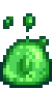

Slime Ball
| Slime Ball | |
|  | |
| Filled with slime. | |
| Information | |
| Source | Slime Hutch |
| Season | |
| Sell Price | Cannot be sold |
Slimes produce Slime Balls in a Slime Hutch on a daily basis, but only if there are enough slimes present and the water troughs are filled. Up to four slime balls per day are possible in one Slime Hutch, and the types of slimes present has no impact on spawning.
The minimum requirements for just one slime ball to form is at least five slimes (of any gender) and at least one filled water trough.[1] To get four slime balls per day, there must be at least 20 slimes living in the hutch and all four water troughs must be filled. Whether or not the slimes can reach the water troughs (because of obstacles placed in the hutch) does not matter. There must also be enough unoccupied tiles in the hutch; note that slime balls cannot spawn on crafted flooring.
The Slime Ball can be right-clicked to release multiple  Slime items. Slime balls also have a rare chance to have Petrified Slime inside.
Slime items. Slime balls also have a rare chance to have Petrified Slime inside.
Bugs
On mobile versions of the game, loading a middle-of-the-day save file (either an Emergency Save or a Backup Save), causes all water troughs in Slime Hutches to be prematurely emptied. Therefore, Slime Balls will never spawn the following morning. To reliably produce Slime Balls on mobile versions of the game, it is best to fill water troughs at the end of the day, shortly before going to sleep.
References
- ↑ See game code in SlimeHutch::DayUpdate.
History
- 1.0: Introduced.
- 1.1: Added Petrified Slime to possible drops.
| Animals and Produce | |
|---|---|
| Coop | Chicken (Egg • Large Egg • Brown Egg • Large Brown Egg) • Dinosaur (Dinosaur Egg) • Duck (Duck Egg • Duck Feather) • Golden Chicken (Golden Egg) • Rabbit (Wool • Rabbit's Foot) • Void Chicken (Void Egg) |
| Barn | Cow (Milk • Large Milk) • Goat (Goat Milk • Large Goat Milk) • Sheep (Wool) • Ostrich (Ostrich Egg) • Pig (Truffle) |
| Fish Pond | Fish (Roe) |
| Slime Hutch | Slimes (Slime • Slime Ball • Slime Egg) |
| Other | Cat • Dog • Horse • Turtle |